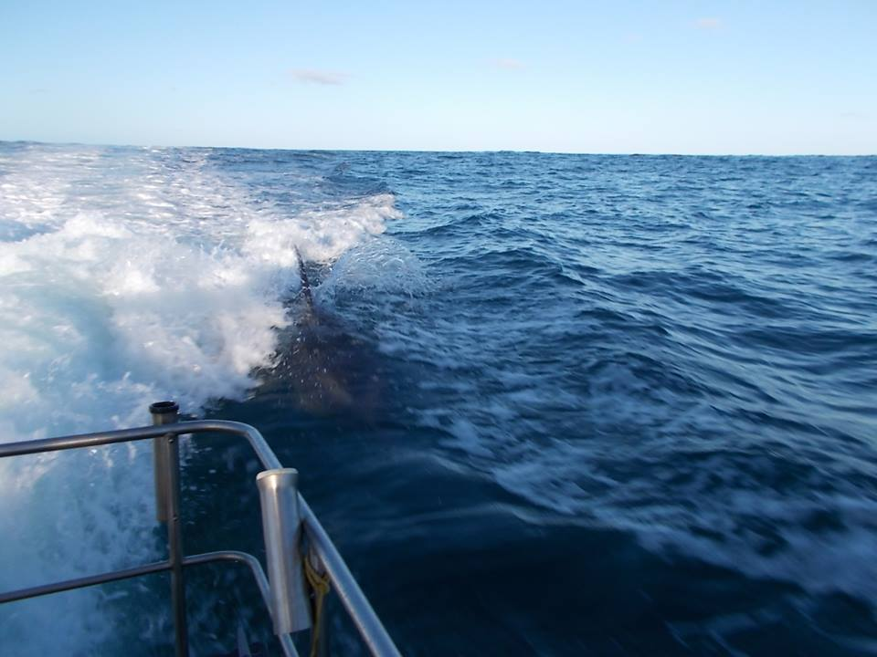

|  |
Fishing trips
Best time to book a fishing trip it's in nov - mar.
The waters of Manukau Harbour, Kaipara Harbour and Auckland's East Coast,
were we can organize 1, 2-3 days trips ,
are rich in snapper, kingfish, kahawai, terakihi, trevally, blue cod, marlin, gurnard.
|